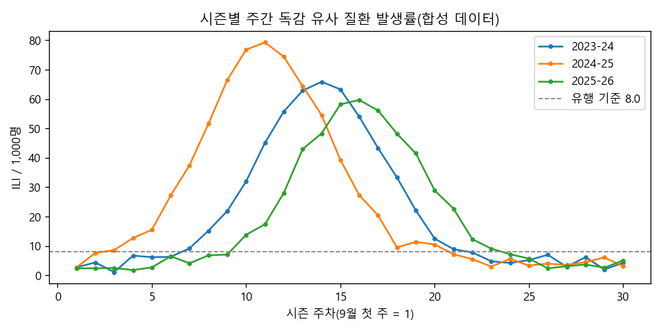
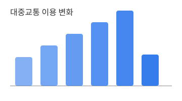
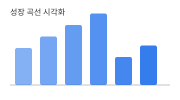

계절별 독감 유행 분석
질문: 유행 기준을 언제 넘을까? · 데이터: 합성 주간 자료 · 방법: pandas · 결과: 정점보다 6~8주 먼저 기준 초과
자세히 보기 →Data Analyst · AI
공공·의료 데이터를 분석해 의사결정에 쓸 수 있는 질문과 답을 만듭니다. 모든 프로젝트는 공개 데이터나 합성 데이터로 재현할 수 있습니다.
| 영역 | 도구 | 수준 |
|---|---|---|
| 분석 | Python(pandas, scikit-learn), R | 실무 |
| 시각화 | matplotlib, ggplot2, Tableau | 실무 |
| 데이터베이스 | SQL(PostgreSQL) | 중급 |
| 자동화·협업 | Git, GitHub Actions | 중급 |

질문: 유행 기준을 언제 넘을까? · 데이터: 합성 주간 자료 · 방법: pandas · 결과: 정점보다 6~8주 먼저 기준 초과
자세히 보기 →
요일·날씨에 따른 이용 차이를 회귀 분석으로 살펴봤습니다.
(준비 중)
공개 표준치를 인터랙티브 그래프로 보여 주는 페이지입니다.
(준비 중)| 자격 | 발급 기관 | 연도 |
|---|---|---|
| 데이터분석 준전문가(ADsP) | 한국데이터산업진흥원 | 2024 |
| SQL 개발자(SQLD) | 한국데이터산업진흥원 | 2025 |
프로젝트 협업 문의는 GitHub Issues 또는 LinkedIn으로 연락 주세요.